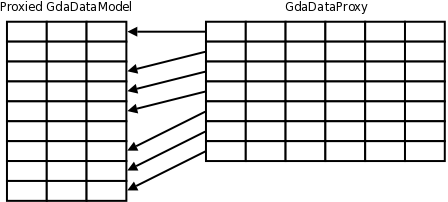
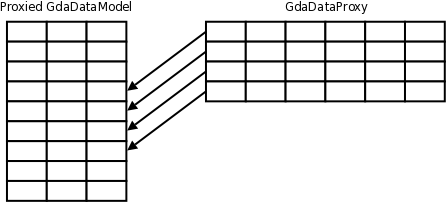
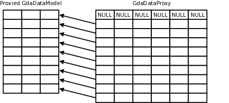
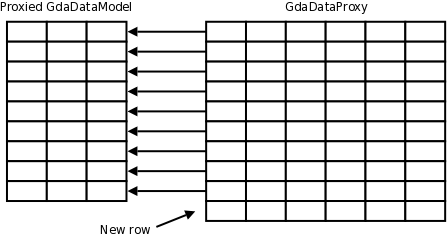

| Top |
GdaDataProxyGdaDataProxy — Proxy to hold modifications for any GdaDataModel, providing the GdaDataModel interface itself |
Functions
Properties
| gboolean | cache-changes | Read / Write |
| gboolean | defer-sync | Read / Write |
| GdaDataModel * | model | Read / Write / Construct |
| gboolean | prepend-null-entry | Read / Write |
| gint | sample-size | Read / Write / Construct |
Description
This object stores modifications to be made to a GdaDataModel object which is proxied until the modifications are actually written to the GdaDataModel, it can also filter the proxied data model to show only a subset (a defined number of continuous rows or by a filter to apply).
Specifically, for a proxied data model having nb_cols columns and nb_rows rows,
the GdaDataProxy object has the following attributes:
-
2 * nb_colscolumns:the first (>= 0)
nb_colscolumns are the current values stored in the proxy (which correspond to the values of the proxied data model if the considered row has not been changed). The associated values are writable.the last
nb_colscolumns are the values stored in the proxied data model, at columncol - nb_cols
-
a variable number of rows depending on the following attributes:
if the proxy is configured to have an empty row as the first row
if the proxy only displays parts of the proxied data model
if new rows have been added to the proxy
Any GdaDataModelIter iterator created will only make appear the colmuns as present in the proxied data model, not any of the other columns
This situation is illustrated in the following schema, where there is a direct mapping between the proxy's rows and the proxied data model's rows:
Note that unless explicitly mentioned, the columns are read-only.
The following figures illustrate row mappings between the data proxy and the proxied data model in several situations (which can be combined, but are shown alone for simplicity):
-
situation where rows 1 and 5 have been marked as deleted from the data proxy, using
gda_data_proxy_delete()method, the data proxy has 2 rows less than the proxied data model: -
situation where the data proxy only shows a sample of the proxied data model at any given time, using the
gda_data_proxy_set_sample_size()method (the sample here is 4 rows wide, and starts at row 3): -
situation where the data proxy shows a row of NULL values, using the "prepend-null-entry" property:
 -
situation where a row has been added to the data proxy, using for example the
gda_data_model_append_row()method:
The GdaDataProxy objects are thread safe, which means any proxy object can be used from any thread at the same time as they implement their own locking mechanisms.
Functions
gda_data_proxy_new ()
GObject *
gda_data_proxy_new (GdaDataModel *model);
Creates a new proxy for model
. For bindings use gda_data_proxy_new_with_data_model
.
gda_data_proxy_new_with_data_model ()
GdaDataProxy *
gda_data_proxy_new_with_data_model (GdaDataModel *model);
Creates a new proxy for model
. This is the preferred method to create
GdaDataProxy objects by bindings.
Since: 5.2.0
gda_data_proxy_get_proxied_model ()
GdaDataModel *
gda_data_proxy_get_proxied_model (GdaDataProxy *proxy);
Fetch the GdaDataModel which proxy
does proxy
gda_data_proxy_get_proxied_model_n_cols ()
gint
gda_data_proxy_get_proxied_model_n_cols
(GdaDataProxy *proxy);
Get the number of columns in the proxied data model
gda_data_proxy_get_proxied_model_n_rows ()
gint
gda_data_proxy_get_proxied_model_n_rows
(GdaDataProxy *proxy);
Get the number of rows in the proxied data model
gda_data_proxy_get_values ()
GSList * gda_data_proxy_get_values (GdaDataProxy *proxy,gint proxy_row,gint *cols_index,gint n_cols);
Retrieve a whole list of values from the proxy
data model. This function
calls gda_data_proxy_get_value()
for each column index specified in cols_index
, and generates a GSList on the way.
Parameters
proxy |
a GdaDataProxy object |
|
proxy_row |
a proxy row |
|
cols_index |
array containing the columns for which the values are requested. |
[array length=n_cols] |
n_cols |
size of |
Returns
a new list of values (the list must be freed, not the values),
or NULL if an error occurred.
[element-type GValue][transfer container]
gda_data_proxy_get_value_attributes ()
GdaValueAttribute gda_data_proxy_get_value_attributes (GdaDataProxy *proxy,gint proxy_row,gint col);
Get the attributes of the value stored at (proxy_row, col) in proxy
, which
is an ORed value of GdaValueAttribute flags
gda_data_proxy_alter_value_attributes ()
void gda_data_proxy_alter_value_attributes (GdaDataProxy *proxy,gint proxy_row,gint col,GdaValueAttribute alter_flags);
Alters the attributes of the value stored at (proxy_row, col) in proxy
. the alter_flags
can only contain the GDA_VALUE_ATTR_IS_NULL, GDA_VALUE_ATTR_IS_DEFAULT and GDA_VALUE_ATTR_IS_UNCHANGED
flags (other flags are ignored).
Parameters
proxy |
a GdaDataProxy object |
|
proxy_row |
A proxy row number |
|
col |
a valid column number |
|
alter_flags |
flags to alter the attributes. |
[transfer none] |
gda_data_proxy_get_proxied_model_row ()
gint gda_data_proxy_get_proxied_model_row (GdaDataProxy *proxy,gint proxy_row);
Get the proxy
's proxied model row corresponding to proxy_row
gda_data_proxy_delete ()
void gda_data_proxy_delete (GdaDataProxy *proxy,gint proxy_row);
Marks the row proxy_row
to be deleted
gda_data_proxy_undelete ()
void gda_data_proxy_undelete (GdaDataProxy *proxy,gint proxy_row);
Remove the "to be deleted" mark at the row proxy_row
, if it existed.
gda_data_proxy_row_is_deleted ()
gboolean gda_data_proxy_row_is_deleted (GdaDataProxy *proxy,gint proxy_row);
Tells if the row number proxy_row
is marked to be deleted.
gda_data_proxy_row_is_inserted ()
gboolean gda_data_proxy_row_is_inserted (GdaDataProxy *proxy,gint proxy_row);
Tells if the row number proxy_row
is a row which has been inserted in proxy
(and is thus not in the proxied data model).
gda_data_proxy_row_has_changed ()
gboolean gda_data_proxy_row_has_changed (GdaDataProxy *proxy,gint proxy_row);
Tells if the row number proxy_row
has changed
gda_data_proxy_has_changed ()
gboolean
gda_data_proxy_has_changed (GdaDataProxy *proxy);
Tells if proxy
contains any modifications not applied to the proxied data model.
gda_data_proxy_get_n_new_rows ()
gint
gda_data_proxy_get_n_new_rows (GdaDataProxy *proxy);
Get the number of rows which have been added to proxy
and which are not part of
the proxied data model.
gda_data_proxy_get_n_modified_rows ()
gint
gda_data_proxy_get_n_modified_rows (GdaDataProxy *proxy);
Get the number of rows which have been modified in the proxy (the sum of rows existing in the proxied data model which have been modified, and new rows).
gda_data_proxy_apply_row_changes ()
gboolean gda_data_proxy_apply_row_changes (GdaDataProxy *proxy,gint proxy_row,GError **error);
Commits the modified data in the proxy back into the GdaDataModel.
Parameters
proxy |
a GdaDataProxy object |
|
proxy_row |
the row number to commit |
|
error |
place to store the error, or |
gda_data_proxy_cancel_row_changes ()
void gda_data_proxy_cancel_row_changes (GdaDataProxy *proxy,gint proxy_row,gint col);
Resets data at the corresponding row and column. If proxy_row
corresponds to a new row, then
that new row is deleted from proxy
.
Parameters
proxy |
a GdaDataProxy object |
|
proxy_row |
the row to cancel changes |
|
col |
the column to cancel changes, or less than 0 to cancel any change on the |
gda_data_proxy_apply_all_changes ()
gboolean gda_data_proxy_apply_all_changes (GdaDataProxy *proxy,GError **error);
Apply all the changes stored in the proxy to the proxied data model. The changes are done row after row, and if an error occurs, then it is possible that not all the changes to all the rows have been applied.
gda_data_proxy_cancel_all_changes ()
gboolean
gda_data_proxy_cancel_all_changes (GdaDataProxy *proxy);
Cancel all the changes stored in the proxy (the proxy
will be reset to its state
as it was just after creation). Note that if there are some cached changes (i.e. not applied
to the current proxied data model), then these cached changes are not cleared (set the "cache-changes"
property to FALSE for this).
gda_data_proxy_set_sample_size ()
void gda_data_proxy_set_sample_size (GdaDataProxy *proxy,gint sample_size);
Sets the size of each chunk of data to display: the maximum number of rows which
can be "displayed" at a time (the maximum number of rows which proxy
pretends to have).
The default value is arbitrary 300 as it is big enough to
be able to display quite a lot of data, but small enough to avoid too much data
displayed at the same time.
Note: the rows which have been added but not yet committed will always be displayed regardless of the current chunk of data, and the modified rows which are not visible when the displayed chunk of data changes are still held as modified rows.
To remove the chunking of the data to display, simply pass sample_size
the 0 value.
gda_data_proxy_get_sample_size ()
gint
gda_data_proxy_get_sample_size (GdaDataProxy *proxy);
Get the size of each chunk of data displayed at a time.
gda_data_proxy_set_sample_start ()
void gda_data_proxy_set_sample_start (GdaDataProxy *proxy,gint sample_start);
Sets the number of the first row to be available in proxy
(in reference to the proxied data model)
gda_data_proxy_get_sample_start ()
gint
gda_data_proxy_get_sample_start (GdaDataProxy *proxy);
Get the number of the first row to be available in proxy
(in reference to the proxied data model)
gda_data_proxy_get_sample_end ()
gint
gda_data_proxy_get_sample_end (GdaDataProxy *proxy);
Get the number of the last row to be available in proxy
(in reference to the proxied data model)
gda_data_proxy_set_filter_expr ()
gboolean gda_data_proxy_set_filter_expr (GdaDataProxy *proxy,const gchar *filter_expr,GError **error);
Sets a filter among the rows presented by proxy
. The filter is defined by a filter expression
which can be any SQL valid expression using proxy
's columns. For instance if proxy
has the "id" and
"name" columns, then a filter can be "length(name) < 5" to filter only the rows where the length of the
name is strictly inferior to 5, or "id >= 1000 and id < 2000 order by name limit 50" to filter only the rows where the id
is between 1000 and 2000, ordered by name and limited to 50 rows.
Note about column names: real column names can be used (double quoted if necessary), but columns can also be named "_<column number>" with column numbers starting at 1.
Note that any previous filter expression is replaced with the new filter_expr
if no error occurs
(if an error occurs, then any previous filter is left unchanged).
Parameters
proxy |
a GdaDataProxy object |
|
filter_expr |
an SQL based expression which will filter the contents of |
[allow-none] |
error |
a place to store errors, or |
gda_data_proxy_get_filter_expr ()
const gchar *
gda_data_proxy_get_filter_expr (GdaDataProxy *proxy);
Get the current filter expression used by proxy
.
gda_data_proxy_set_ordering_column ()
gboolean gda_data_proxy_set_ordering_column (GdaDataProxy *proxy,gint col,GError **error);
Orders by the col
column
Parameters
proxy |
a GdaDataProxy object |
|
col |
the column number to order from |
|
error |
a place to store errors, or |
gda_data_proxy_get_filtered_n_rows ()
gint
gda_data_proxy_get_filtered_n_rows (GdaDataProxy *proxy);
Get the total number of filtered rows in proxy
if a filter has been applied. As new rows
(rows added to the proxy and not yet added to the proxied data model) and rows to remove
(rows marked for removal but not yet removed from the proxied data model) are also filtered,
the returned number also contains references to new rows and rows to be removed.
Property Details
The “cache-changes” property
“cache-changes” gboolean
Defines how changes kept in the data proxy are handled when the proxied data model
is changed (using the "model" property). The default is to silently discard all the
changes, but if this property is set to TRUE, then the changes are cached.
If set to TRUE, each cached change will be re-applied to a newly set proxied data model if
the change's number of columns match the proxied data model's number of columns and based on:
the contents of the proxied data model's modified row for updates and deletes
the inserts are always kept
Flags: Read / Write
Default value: FALSE
Since: 5.2
The “defer-sync” property
“defer-sync” gboolean
Tells if changes to the sample of rows displayed is done in background in several steps or if it's done in one step.
Flags: Read / Write
Default value: TRUE
The “prepend-null-entry” property
“prepend-null-entry” gboolean
Tells if a row composed of NULL values is inserted as the proxy's first row.
Flags: Read / Write
Default value: FALSE
The “sample-size” property
“sample-size” gint
Number of rows which the proxy will contain at any time, like a sliding window on the proxied data model.
Flags: Read / Write / Construct
Allowed values: [0,2147483646]
Default value: 300
Signal Details
The “filter-changed” signal
void user_function (GdaDataProxy *proxy, gpointer user_data)
Gets emitted when proxy
's filter has been changed
Flags: Run First
The “row-changes-applied” signal
void user_function (GdaDataProxy *proxy, gint row, gint proxied_row, gpointer user_data)
Gets emitted when proxy
has committed a row change to the proxied data model.
Parameters
proxy |
the GdaDataProxy |
|
row |
the proxy's row |
|
proxied_row |
the proxied data model's row |
|
user_data |
user data set when the signal handler was connected. |
Flags: Run First
The “row-delete-changed” signal
void user_function (GdaDataProxy *proxy, gint row, gboolean to_be_deleted, gpointer user_data)
Gets emitted whenever a row has been marked to be deleted, or has been unmarked to be deleted
Parameters
proxy |
the GdaDataProxy |
|
row |
the concerned |
|
to_be_deleted |
tells if the |
|
user_data |
user data set when the signal handler was connected. |
Flags: Run First
The “sample-changed” signal
void user_function (GdaDataProxy *proxy, gint sample_start, gint sample_end, gpointer user_data)
Gets emitted whenever proxy
's sample size has been changed. sample_start
and sample_end
are
in reference to the proxied data model.
Parameters
proxy |
the GdaDataProxy |
|
sample_start |
the first row of the sample |
|
sample_end |
the last row of the sample |
|
user_data |
user data set when the signal handler was connected. |
Flags: Run First
The “sample-size-changed” signal
void user_function (GdaDataProxy *proxy, gint sample_size, gpointer user_data)
Gets emitted whenever proxy
's sample size has been changed
Parameters
proxy |
the GdaDataProxy |
|
sample_size |
the new sample size |
|
user_data |
user data set when the signal handler was connected. |
Flags: Run First
The “validate-row-changes” signal
GError* user_function (GdaDataProxy *proxy, gint row, gint proxied_row, gpointer user_data)
Gets emitted when proxy
is about to commit a row change to the proxied data model. If any
callback returns a non NULL value, then the change commit fails with the returned GError
Parameters
proxy |
the GdaDataProxy |
|
row |
the proxy's row |
|
proxied_row |
the proxied data model's row |
|
user_data |
user data set when the signal handler was connected. |
Flags: Run Last